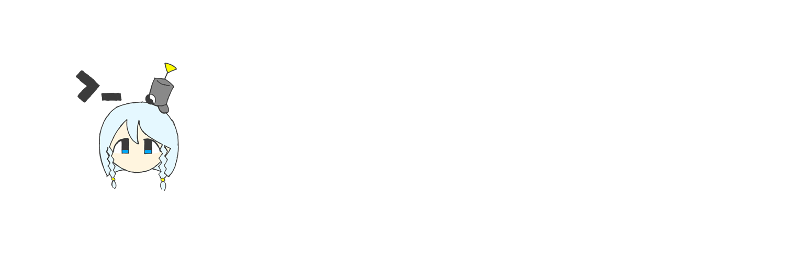

<br>
        <div class="center-blocktext">
            <div class="main">
                東方管制塔開発部は，東方管制塔をはじめとする東方系ツールの開発・配布を行っております．
            </div><br>
            <div class="title">東方管制塔</div>
            <div class="main">
                東方管制塔は，東方原作向けのゲームランチャーです．
                東方管制塔 EX と東方管制塔 Lite の2種類があります．
                東方管制塔 EX は，ゲームランチャーだけでなくスコアデータビューアやリプレイファイル管理機能なども備わっています．
                東方管制塔 Lite は，シンプルさを重視したゲームランチャーです．
                <li>
                    <a href="./Ex/index.html">東方管制塔 EX</a>
                </li>
                <li>
                    <a href="./Lite/index.html">東方管制塔 Lite</a>
                </li>
            </div><br>
            <div class="title">東方管制塔 EX プラグイン</div>
            <div class="main">
                東方管制塔 EX プラグインは，東方管制塔 EX の機能を拡張することができます．
                <li>
                    <a href="./Ex/MARISA/index.html">MARISA for 東方管制塔 EX</a>
                </li>
                <li>
                    <a href="https://github.com/armadillo-winX/ThGameMgr.Ex.AutoThpracSelector">AutoThpracSelector</a>
                </li>
                <li>
                    <a href="https://github.com/armadillo-winX/VpatchIniEditor">vpatch.ini エディタ</a>
                </li>
                <li>
                    <a href="https://github.com/armadillo-winX/CardRecordToMd">Card Attack to Markdown</a>
                </li><br>
                プラグインの導入方法については，以下をご覧ください．<br>
                <a href="./Ex/howtoinstallplugin.html">東方管制塔 EX プラグインの導入方法 | 東方管制塔開発部</a>
            </div><br>
            <div class="title">サービス</div>
            <div class="main">
                <li>
                    <a href="./Ex/plugins/index.html">東方管制塔 EX プラグインを探す</a>
                </li>
                <li>
                    <a href="./Lab/index.html">東方管制塔開発部 Lab</a>
                </li>
            </div><br>
            <div class="title">バナー</div>
            <div class="main">
                <a href="https://mashironn.net/ThGameMgr/">
                    
                </a><br>
                東方管制塔開発部のバナーです．リンクを設置する場合，リンク先は https://mashironn.net/ThGameMgr/ にしてください．
            </div><br>
            <div class="title">開発部管理者</div>
            <div class="main">
                東方管制塔開発部管理者の珠音茉白(雨白)です．<br>
                <a href="https://mashironn.net">ましろん.NET</a><br>
                <a href="https://x.com/PhotonSak1054" target="_blank">珠音茉白(雨白) X アカウント</a>
            </div><br>
        </div>
